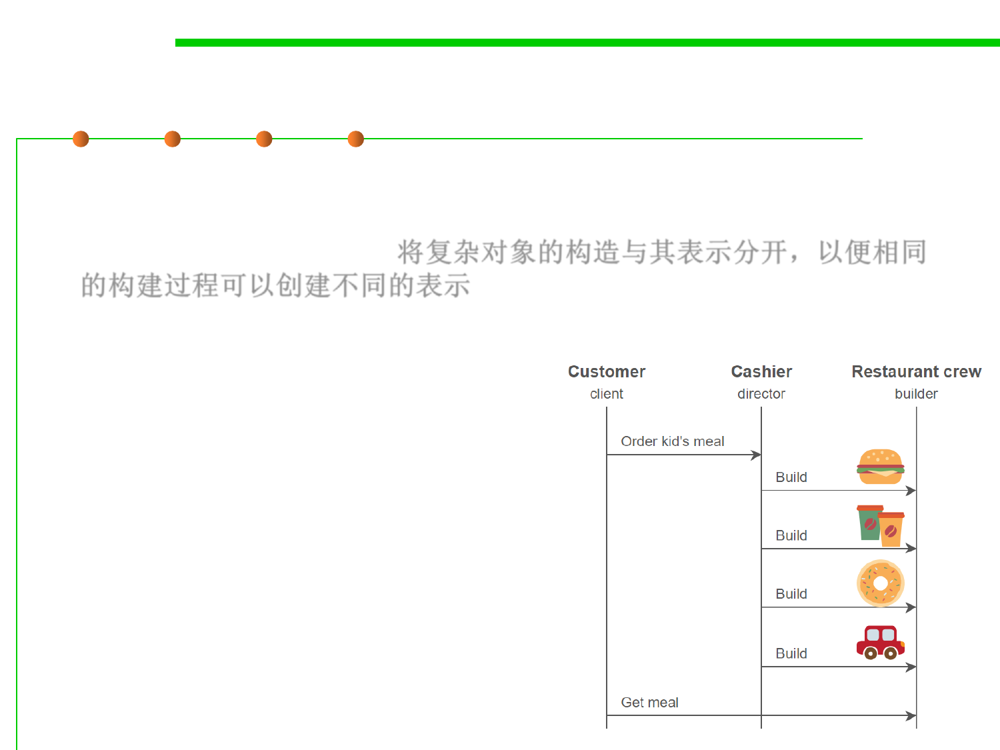

Builder Pattern
6.2 Design Patterns for Maintainability
▪ Builder Pattern: Separate the construction of a complex object from
its representation so that the same construction process can create
different representations. 将复杂对象的构造与其表示分开，以便相同
的构建过程可以创建不同的表示
– The construction of a complex object is common across several
representations
▪ Example: Converting a document
to a number of different formats
– The steps for writing out a document
are the same
– The specifics of each step depend on
the format
▪ Just like you order a combo food
in McDonalds!
▪ 组装复杂的实例